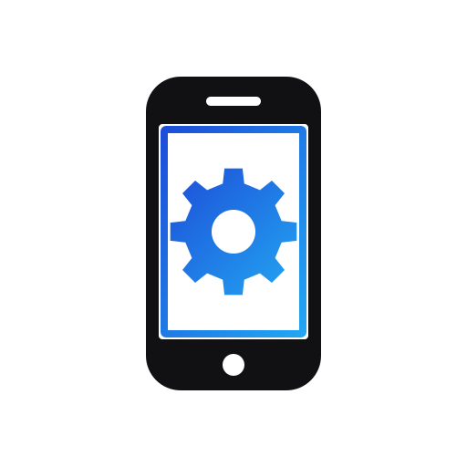

Internet aloqasi yo'q
MyService serveriga ulanib bo'lmadi. Internetni tekshirib, qayta urinib ko'ring.
Нет связи с сервером. Проверьте интернет и попробуйте снова.

MyService serveriga ulanib bo'lmadi. Internetni tekshirib, qayta urinib ko'ring.
Нет связи с сервером. Проверьте интернет и попробуйте снова.